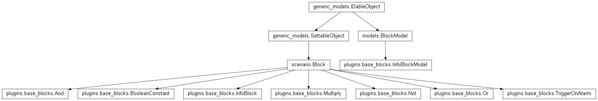

plugins.base_blocks¶

API¶
- The base blocks are the first set of blocks provided to the user in order to build scenarios. They are truly simplistic and are intended to simple demonstrations rather than real use. The idea behind blocks is that users can program new blocks themselves and make them available to the rest of the Majordom community, through their github repository for instance. Blocks are indeed particularly easy to program for two main reasons :
- the programming language used is Python: it is particularly easy and fast to learn. I don’t mean you become a Python expert in a week, though you may be able to program blocks for your own home automation control center in a couple of days, even if you have never programmed before;
- the software structure of a block has been defined. To sum it up, it is an object which has a list of inputs, a list of outputs and a process function which updates the output nodes when an input is updated.
- class plugins.base_blocks.Multiply(*args, **kwargs)¶
Bases: scenario.Block
Multiply is a block which has a one input and one output. The input is a MultiInputNode since you can multiply as many operands as you wish.
- class plugins.base_blocks.Not(*args, **kwargs)¶
Bases: scenario.Block
The output node of the Not block is simply the logical inverse of its input node.
- class plugins.base_blocks.BooleanConstant(*args, **kwargs)¶
Bases: scenario.Block
The output node of the Boolean Constant block remains the same. The value (True or False) can be set in the block settings (in the Majordom App, double tap on the Boolean Constant block and then choose Settings)
- class plugins.base_blocks.Or(*args, **kwargs)¶
Bases: scenario.Block
The output node of the Or block is simply the result of the boolean or operation of its two input nodes.
- class plugins.base_blocks.And(*args, **kwargs)¶
Bases: scenario.Block
The output node of the And block is simply the result of the boolean or operation of its two input nodes.
- class plugins.base_blocks.TriggerOnAlarm(*args, **kwargs)¶
Bases: scenario.Block
TriggerOnAlarm is an example of a more advanced block (it is still quite simple). It enables to implement a simple alarm system.
The first input takes an alarm signal. An alarm signal can for instance be obtained through an InfoBlock: it is a way to define a new Information, for instance ‘alarm’, that can then be used independently from the sensors that activate or deactivate it. In concrete terms, it means that you wouldn’t have to change all the scenarios using the alarm in order to add a new remote that controls the state of the alarm system.
The second input node takes a trigger input: if this signal is activated (i.e. is True), then the output of the alarm block will turn to True too. Though, if this input becomes False while the alarm is still on, it doesn’t change the state of the output node of the block. You can only reverse it by switching off the alarm (turning the alarm signal to False).
This block enables then a slightly more complex behavior than other blocks. It indeed keeps track of an inner state to adapt its reaction to the variation of its inputs. You don’t want that the alarm turns off when the thief closes the door whose opening sensor had initially turned on your loud alarm.
- class plugins.base_blocks.InfoBlock(kernel, *args, **kwargs)¶
Bases: scenario.Block
The InfoBlock enables the user to add himself informations to Majordom.
For instance, you can create an ‘alarm’ scenario, which controls when the alarm is turned on or off. You would use an InfoBlock to add a new information called ‘alarm state’ to your system. To change the name of the associated information, just go in the block’s settings. In this ‘alarm’ scenario, you can specify which remotes will control the state of the alarm: you just have to use an Or block and all the remotes you want.
Then, you can create as many other scenarios as you want, using this new alarm scenario: it means that the scenarios will depend on this information and not directly on any remote’s state. Then, it means that you can change, remove, add remotes that control the state of your alarm without modifying all the scenarios that use the ‘alarm’ information.
This is just an example of how to use the InfoBlock; you will find many others. For instance, if you want to obtain a value deduced from the values given by sensors and then reuse this deduced value in other scenarios, InfoBlock is perfect: calculate the average temperature of your apartment, the maximum temperature variation in the day...